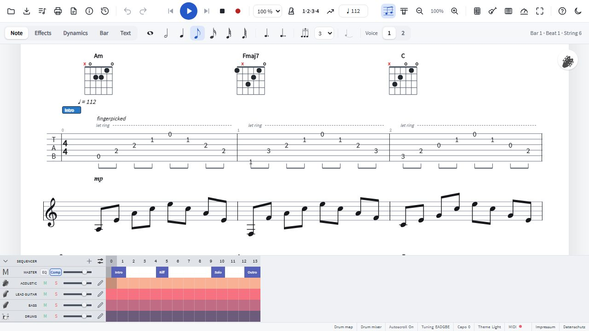

Open Guitar Pro files in the browser
Got a .gp5 or .gp file and no Guitar Pro? Open it in SereneTab: you see the
tab and the notation, hear every track, can change it and save it again, all in the browser, with
nothing to install and no upload.
Open the editor and click the folder button.

Which files open
| Format | Files |
|---|---|
| Guitar Pro 7 and 8 | .gp |
| Guitar Pro 6 | .gpx |
| Guitar Pro 3, 4 and 5 | .gp3, .gp4, .gp5 |
| MusicXML (MuseScore, Finale, Sibelius…) | .musicxml, .xml, .mxl |
| MIDI | .mid, .midi |
| SereneTab | .gt |
Tracks, tunings, capo, tempo changes, repeats and endings, D.S./Coda signs, bends, slides, hammer-ons, harmonics, palm mutes, chords, lyrics and drum tracks come along. If a file uses something SereneTab can't show yet, a message after opening says what was left out.
What you can do with it
- Listen to every track with real instrument sounds; mute or solo tracks to play along.
- Read it as tab, with classical notation above, or several tracks at once in the score view.
- Practise a passage in a loop, slower, with a count-in (how).
- Edit notes, effects, lyrics and the song structure, with undo.
- Save it again as Guitar Pro 5 (
.gp5), Guitar Pro 6–8 (.gpx,.gp), MusicXML, MIDI, PDF or.gt.
Your files stay yours
The file is read by your browser and never leaves your device: there is no upload and no account. The song you are working on is kept in your browser so it is still there next time. See the privacy summary.